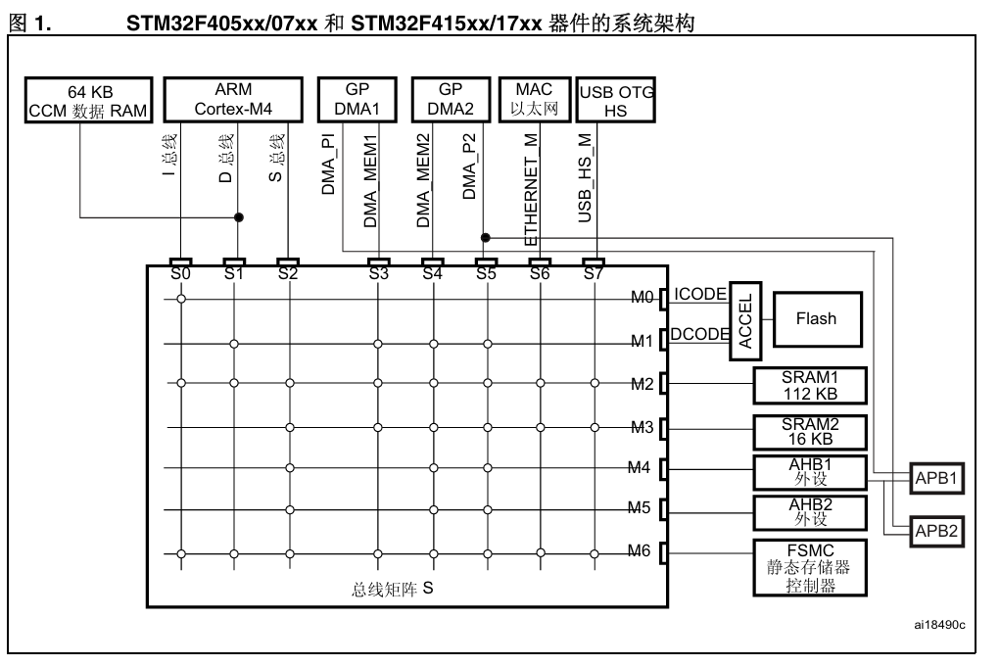
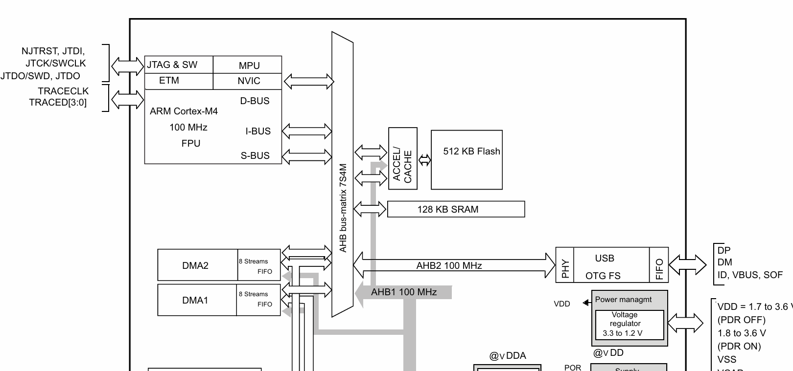
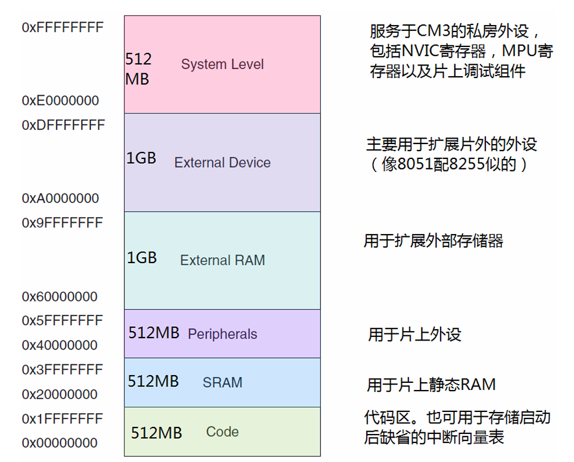

08 STM32
STM32
系统架构
STM32F4系列的系统架构如图所示（来自User Manual）：

可以看到内核通过3条总线连接到AHB(Advanced High-performance Bus)总线矩阵，然后与高速外设（DMA、MAC、USB…）、Flash、SRAM低速外设（通过APB总线桥接）连接
Data Sheet里面也有个比较好的架构图：

ARM Cortex-M系列的CPU都包含以下3条总线：
- I-Bus：指令总线，负责在 0x0000_0000 – 0x1FFF_FFFF 之间的取指操作，访问的存储器对象是Flash
- D-Bus：数据总线，负责在 0x0000_0000 – 0x1FFF_FFFF 之间的数据访问操作，访问的存储器对象是Flash
- S-Bus：系统总线，负责在 0x2000_0000 – 0xDFFF_FFFF 和 0xE010_0000 – 0xFFFF_FFFF 之间的所有数据传送，取指和数据访问都算上，访问对象是SRAM和外设寄存器
不同内核实际上各个总线能访问的地址范围不一样
参考：
- Cortex-M3权威指南第六章
- STM32 User Manual
存储器的映射
ARM Cortex-M系列的CPU将所有CPU能访问到的资源（包括Flash、SRAM、外设寄存器、I/O端口）都映射到了同一个大小为4GB的地址空间中，不同的存储器位于不同的一段地址上，且大部分区域实际上都没用到，作为保留区
ARM Cortex-M规定了一个大致的范围，各个芯片原厂又在这个范围中进一步定制存储器的地址范围

| 地址范围 | 区域 | 说明 |
|---|---|---|
| 0x0000_0000 ~ 0x1FFF_FFFF | 代码区 (Code) | 映射 Flash、System Memory、SRAM（启动时通过 Boot 引脚选择入口） |
| 0x2000_0000 ~ 0x3FFF_FFFF | SRAM 区 | 内部 SRAM，常用来存放堆、栈、全局变量等 |
| 0x4000_0000 ~ 0x5FFF_FFFF | 外设区 (Peripheral) | GPIO、USART、I2C、SPI、TIM 等寄存器都在这里，存储器映射方式访问 |
| 0x6000_0000 ~ 0x9FFF_FFFF | 外部设备区 (External RAM/Device) | FSMC/QUADSPI 等连接的外部存储器 |
| 0xA000_0000 ~ 0xDFFF_FFFF | 外部设备区 (External Device) | 映射 LCD 控制器、扩展存储器等 |
| 0xE000_0000 ~ 0xFFFF_FFFF | 系统区 (System) | NVIC、SCB、调试单元 (Cortex-M 内核外设) |
以 STM32F4 为例：
- Flash：0x0800_0000 ~ 0x080F_FFFF （主程序存储区）
- System Memory：0x1FFF_0000 ~ …（ST 固化的 BootLoader）
- SRAM1：0x2000_0000 ~ 0x2001_FFFF
- SRAM2：0x2002_0000 ~ 0x2003_FFFF（部分型号）
STM32的内存布局
在Linux中，内存布局一般指的是一个进程的内存布局，但是这里的主语是存储器
内存布局是指在这个存储器映射的基础上，一个用户程序是怎么在存储器里组织的。比如 .text 段在 Flash，.data/.bss/heap/stack 在 SRAM
- .text 段：存放代码（实际在 Flash）
- .rodata 段：常量数据（在 Flash）
- .data 段：已初始化的全局/静态变量（上电时从 Flash 拷贝到 SRAM）
- .bss 段：未初始化的全局/静态变量（上电时在 SRAM 清零）
- 堆：动态分配的内存
- 栈：函数调用的局部变量和返回地址，向下增长
启动流程
- STM32上电后首先会根据BOOT0和BOOT1这2个引脚选择启动介质（FLASH/SRAM/System Memory）然后在该介质中取出MSP（主栈的栈顶地址）和Reset_Handler（复位中断服务函数，由startxxx.s定义）
- 之后把PC设置为Reset_Handler，跳转到该函数开始运行，该函数主要做4件事：
- 初始化
.data段：把 Flash 中的已初始化全局变量复制到 SRAM - 清零
.bss段：把未初始化的全局变量清零 - 调用系统初始化函数（通常是
SystemInit()）：配置时钟、外设等 - 跳转到
_main()函数（不是C语言的用户自定义的main()，而是C库的一个函数）：做一些额外的初始化工作，比如初始化堆区
- 初始化
- 之后跳转到
main()：初始化外设、RTOS之类的并开启用户逻辑
System Memory这个启动介质是什么
- System Memory（系统存储器）是STM32芯片内部出厂时固化的一块只读存储区域，地址通常在 0x1FFF_xxxx 区域，里面存放的是ST官方预置的BootLoader程序，用户不可修改。当芯片通过 Boot 引脚选择从System Memory启动时，就会进入这个BootLoader，从而支持串口、USB 等接口下载程序到 Flash
All articles on this blog are licensed under CC BY-NC-SA 4.0 unless otherwise stated.